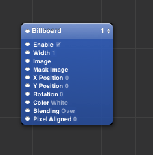

Author: Charles Zhu
Summary: a guide to QuartzComposer
Processors are green, providers are blue, and consumers are pink 最近才发现QuartzComposer也是一款用来设计交互的工具，原来Xcode自带，现在从Xcode中分离成为单独的app。之所以会关注是发现facebook的设计师也比较推崇该工具。在官网上搜索相关文档，内容都比较陈旧，或许说明这个工具比较成熟吧。
基本概念
1. composition
Composer中创建的文件叫Quartz composition ， 其中最基本的单元（module）叫patch。
2. patch
patch是最基本的单元，苹果准备了丰富的库来完成一系列操作。patch库可以通过cmd＋enter的方式调用，然后找到需要的patch直接拖即可。patch相当于是一个程序，函数原型相当于：
Result = function (time, {0 or more input parameters})
在Composer中patch作为了可视化的组件出现了，如下图的billboard。

图中的圆点叫port，左边的port代表输入参数，如果右边也有port的话，就代表输出参数。右上角的数字表示当前所在的层，这个有点类似Quartz2D中的树的概念：数字越小代表着越先执行；从视觉上说，数字越大的会最终显示在view窗口。
2.1 patch的种类
- consumer 用蓝色显示，最终会显示在view窗口
- provider 用粉红色表示，将外部源的数据传递进来。这里的外部源指的是鼠标等事件。
- processor 用黑色显示，主要用于将处理过的数据传递给consumer。
入门
没有使用官方的教程因为没有找到，在库里搜索patch的时候发现有些会带有例子。我是按照该文进行入门练习的。
该示例是模拟点击按钮切换按钮状态的例子，非常详细，跟着练习一边，基本的操作就能上手。最后的作业也很好，主要思路就是在建立一个toogle来过滤状态。
感想
有了sketch和QuartzComposer，自己设计漂亮的产品将不再遥远啦～